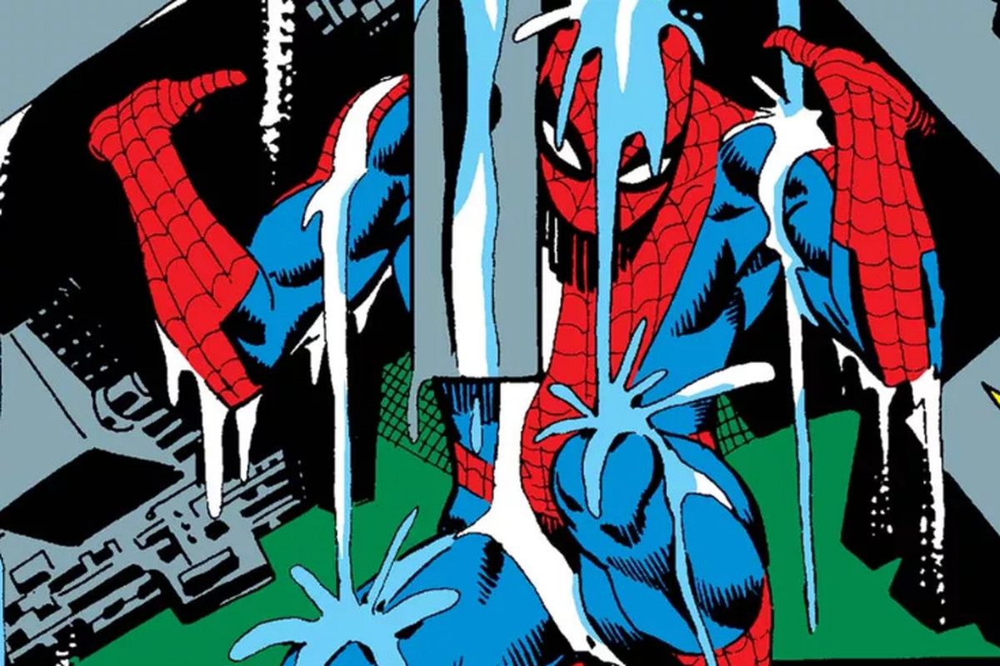
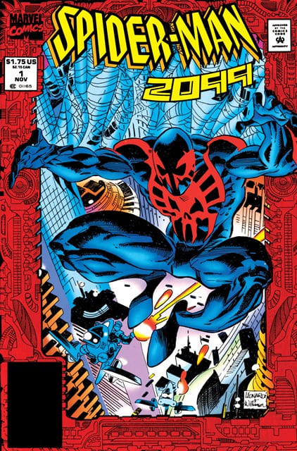

<!DOCTYPE html>
<html>
    <head>
    <title>Spiderman pag web</title>
</head>
<body>
    
    
    </html>
    <h1>Spider-man "Clasico"</h1>
    <h2>Creado por Stan Lee, Steve Ditko y tal vez influenciado por Jack Kirby, Spider-man o Hombre-Araña llega a la industria de los comics con su primera aparicion en 1962 bajo el titulo de historietas "AMAZING FANTASY" numero 15 cerrando asi esta linea.</h2>
    
    
    <h2>Tras su inesperado exito, el personaje obtendria su propia serie titulada "the AMAZING SPIDER-MAN" bajo las ideas de Staan Lee y los Lapices de Steve Ditko. Esta etapa del superheroe se marcaria por la cantidad de villanos que se presentaron, varios encuentros crossovers con otros heroes y por una de las viñetas mas iconicas del personaje dentro del comic "The Final Chrapter"</h2>
    
    <h2>Despues de un breve desacuerdo entre Stan Lee y Steve Ditko por quien seria la identidad secreta de uno de los mayores villanos de Spider-man (el Duende Verde o Green Goblin) Steve Ditko dejaria de ilustrar la serie y se tendria que buscar a un nuevo ilustrdor a su altura, y al ver que Jack Kirby definitivamente no era el indicado, el seleccionado fue Jessie Jonnie Romita o John. Romita quien le daria al personaje un aspecto clasico casi perfecto entre los fans e ilustraria varias de las historias mas trascendentales y recordadas de Spider-man</h2>
    
    
    <h2>Despues de esto, pocos serian los que se atreverian a cambiar la imagen del personaje, las unicas variaciones que tendria serian el famoso "traje negro" y Spider-man 2099 (Miguel O'hara) siendo hasta la llegada de Todd mc farlane, el cual dibujaba con un estilo muy peculiar, que personas como Mark Bagley o erik Larsen esntrarian a la industria y como el personaje estaba apunto de lansarse al mundo de los video juegos 3D y a su primera pelicula a la pantalla grande, este seria el cambio definitivo al Spider-man moderno.</h2>
    
    
    
    
    
    
    
</body>
